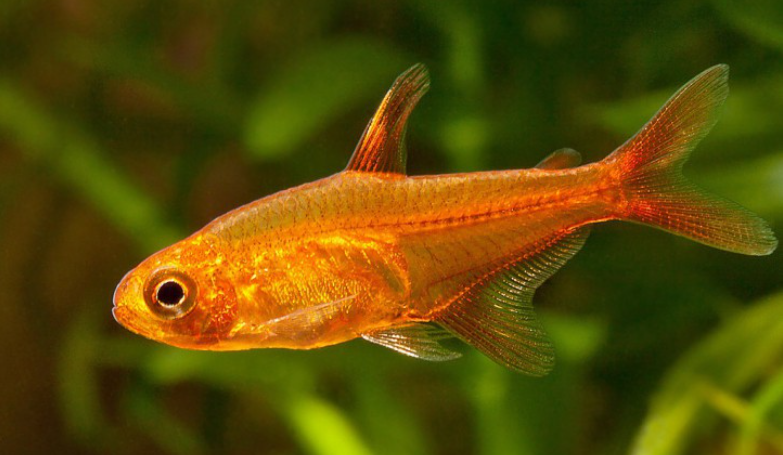

Systématique
- Ordre : Characiformes
- Famille : Characidae
- Genre : Hyphessobrycon
- Espèce : H. amandae

Hyphessobrycon amandae, communément appelé Tétra amande, est l'un des plus petits characidés d'Amérique du Sud, devenu une icône de la nano-aquariophilie et de l'aquascaping.
C'est un poisson miniature mesurant à peine 2 cm à l'âge adulte. Son corps est légèrement translucide avec une coloration allant de l'orange pâle au rouge brique intense, ressemblant à la couleur de l'ambre ou d'une braise (d'où son nom anglais "Ember Tetra").
Malgré sa petite taille, c'est un poisson robuste une fois acclimaté, qui forme de magnifiques bancs colorés contrastant avec le vert des plantes.
C'est un poisson strictement grégaire qui est timide s'il n'est pas en nombre suffisant. Il doit être maintenu en banc d'au moins 10 à 15 individus. Plus le groupe est grand, plus son comportement est naturel et ses couleurs intenses.
Il occupe la zone médiane de l'aquarium. Très pacifique, il ne doit cohabiter qu'avec d'autres espèces calmes et de petite taille (crevettes, Corydoras nains, micro-rasboras) pour ne pas servir de nourriture.
Mode : ovipare.
C'est un diffuseur d'œufs. La reproduction est possible en aquarium mais demande de la finesse. Le couple pond parmi les plantes fines (mousse de Java).
Les œufs sont minuscules et non adhésifs. Les parents ne s'occupent pas de la progéniture et peuvent manger les œufs. Les alevins sont microscopiques et nécessitent des infusoires ou du phytoplancton pendant les premiers jours.
Dimorphisme sexuel : Le mâle est généralement plus svelte et arbore une couleur rouge plus intense et uniforme. La femelle est plus ronde, avec un ventre plus rebondi et une coloration souvent un peu plus pâle ou orangée.
Espérance de vie : Environ 2 à 3 ans.
Il est endémique du bassin de la rivière Araguaia au Brésil (État du Tocantins). Il fréquente les eaux calmes, les bras morts et les petits affluents forestiers à courant très lent, souvent riches en végétation et en tanins (eau légèrement ambrée).
Répartition

Origine naturelle :
- Amérique du Sud.
- Brésil central.
- Bassin du Rio Araguaia (système Tocantins).
Paramètres de maintenance
Température : 23 à 28 °C.
pH : 5,5 à 7,0 (préfère l'eau acide et douce).
GH : 1 à 10 °dGH.
Courant : Faible. Il n'aime pas les forts brassages.
Volume conseillé : Minimum 40 à 50 L. Bien qu'il soit très petit, il a besoin de nager en groupe. Un bac de 45-60 cm de façade est idéal pour un banc.
Régime alimentaire
Régime : omnivore / micro-prédateur.
Dans la nature, il mange de petits invertébrés et du zooplancton.
En aquarium, il faut adapter la nourriture à sa très petite bouche : paillettes réduites en poudre, micro-granulés, et nauplies d'artémias ou cyclops pour raviver sa couleur rouge.